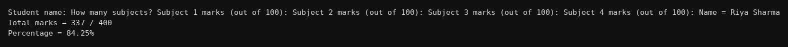

package basics;
import java.util.Scanner;
public class Q204 {
public static void main(String[] args) {
Scanner kb = new Scanner(System.in);
System.out.print("Student name: ");
String name = kb.nextLine();
System.out.print("How many subjects? ");
int n = kb.nextInt();
int tot = 0;
for(int i=1;i<=n;i++){
System.out.print("Subject "+i+" marks (out of 100): ");
tot = tot + kb.nextInt();
}
double per = tot*100.0/(n*100);
System.out.println("Name = "+name);
System.out.println("Total marks = "+tot+" / "+(n*100));
System.out.println("Percentage = "+per+"%");
}
}